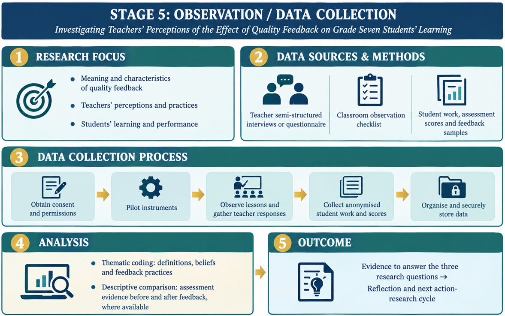

CLASSROOM ACTION RESEARCH / SELECTED STAGE 03
Observation &
Data Collection
Our group is responsible for the Observation & Data Collection stage of the Action Research Cycle. This stage takes place after the planned action has been implemented and focuses on gathering evidence about its effects. Through systematic observation and the collection of relevant data, researchers are able to determine what occurred during implementation, identify patterns and outcomes, and assess whether the action is addressing the problem effectively. The information gathered during this stage provides the evidence needed for analysis, reflection, and decision-making in the subsequent stages of the research cycle. According to Mertler (2022), collecting accurate and meaningful data is essential for evaluating the impact of an intervention and guiding future improvements.
THE DETAILS
why you think so?”
OVER ASSUMPTION ↗
76°48' W
Good classroom decisions start with careful observation, not guesswork. Collect evidence, interpret it thoughtfully, and use it to improve learning.
PRESENTATION MAP
Four stops.
One clear picture.
Let us move through the selected stage, from why it matters to what is needed to carry it out.
Purpose &
significance
What observation reveals and why evidence matters.
↗ 03 / WHAT TO INCLUDEComponents
The key decisions, methods, instruments, and safeguards.
↗ 04 / HOW IT CONNECTSThe action
research cycle
See how observation links action and reflection.
↗ 05 / WHAT IS REQUIREDResources &
processes
Information, people, tools, and practical steps.
↗CLASSROOM ACTION RESEARCH
Observe
What is the Framework?
The proposed framework is informed by research on formative feedback and its influence on learning. Hattie and Timperley (2021) explain that feedback can positively or negatively affect achievement depending on its nature and delivery. In this study, Hattie and Timperley’s (2021) framework will guide data collection and analysis by examining teachers’ perceptions, classroom feedback practices, and Grade Seven students’ academic performance. Teacher interviews or questionnaires, classroom observations, student work, and assessment records will provide evidence of feedback practices and students’ responses. The findings will be analysed using the model’s three feedback questions and four feedback levels, while considering other factors that may influence student performance.

RECORD
INTERPRET